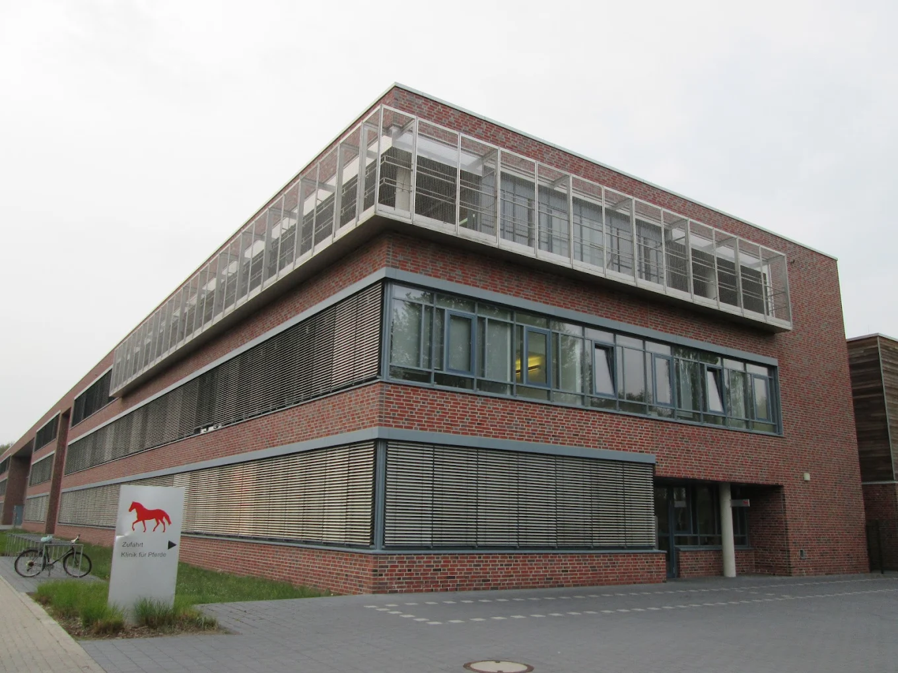
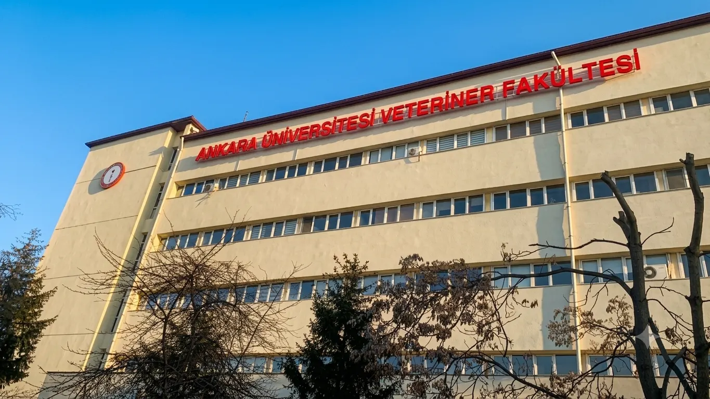
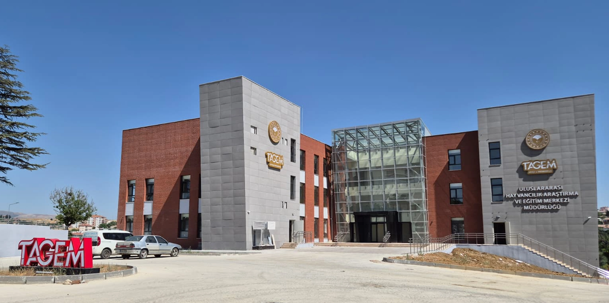
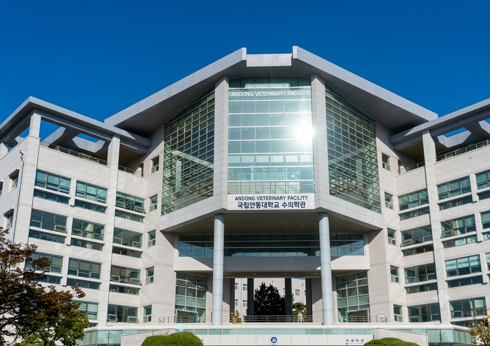
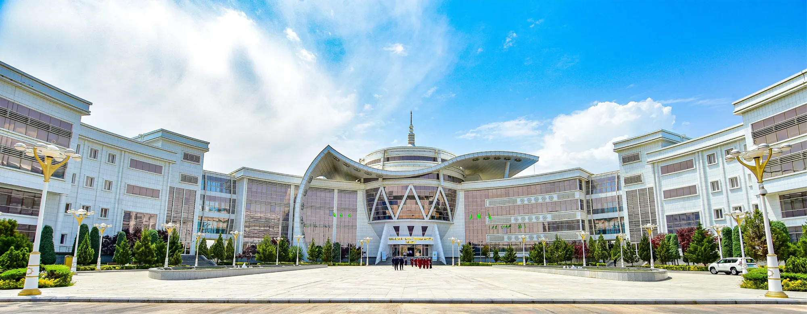
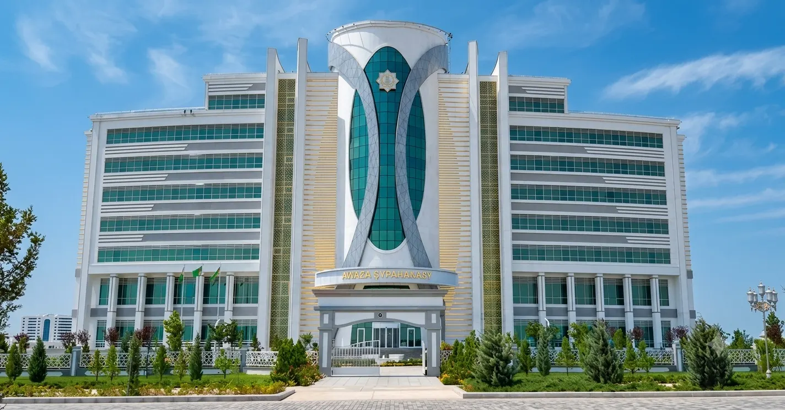
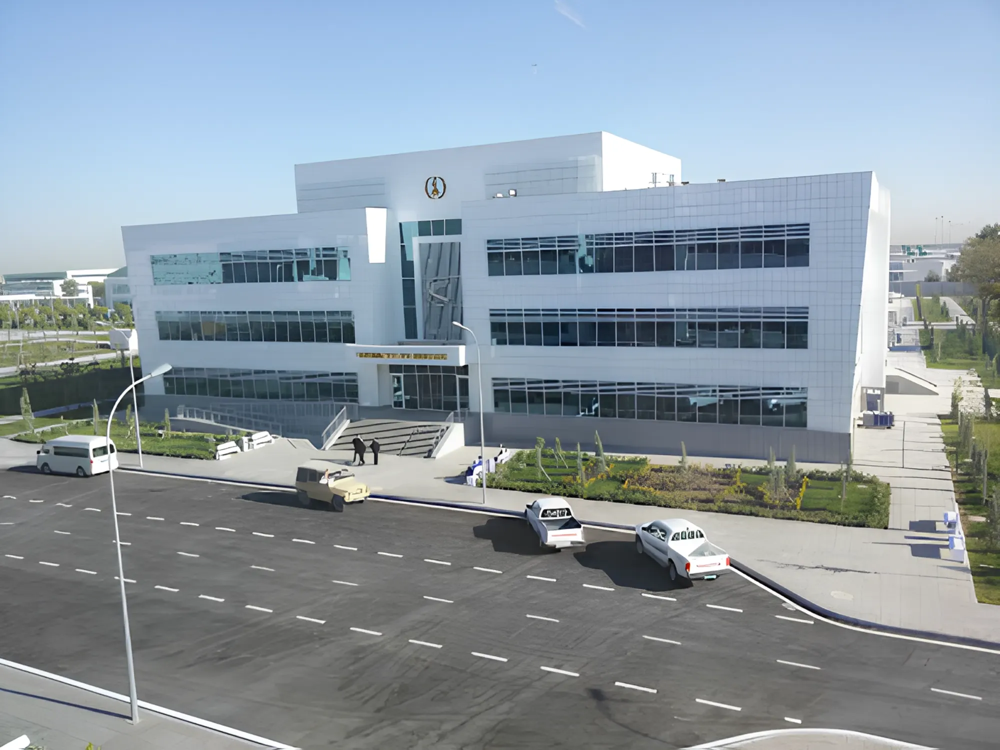

Sperm Laboratory
Hannover, Germany
At the sperm laboratory of the University of Veterinary Medicine Hannover, one of Germany's leading academic centres, cutting-edge scientific research dedicated to bovine semen was conducted. Within the scope of the project, semen quality analyses were successfully performed, along with optimisation of freezing conditions and long-term storage protocols. The results obtained have become an important international reference point in the fields of animal husbandry and reproductive biotechnology.
SELECTED CASE STUDIES

Faculty of Natural Sciences · Faculty of Pharmacy
In collaboration with the Veterinary Faculty, the Department of Biology of the Faculty of Natural Sciences, and the Faculty of Pharmacy of Ankara University, joint scientific projects were carried out. The work covers the fields of microbiology, parasitology and pharmacology, and includes comprehensive research and development activities. The primary focus is on developing new forms of veterinary medicines, conducting biological trials, and designing field application protocols. These projects make a significant contribution to the development of innovative treatment methods, the improvement of biosafety, and the advancement of sustainable livestock farming.

Ankara, Turkey
The aim of the project was to study the effects of pesticides on sperm quality and the reproductive system of male animals. During the study, biochemical changes induced by various groups of pesticides were evaluated, including analysis of sperm morphology, motility, viability and DNA integrity. In addition, biological protective agents were investigated to reduce the negative consequences of toxic exposure. The results obtained are of significant importance for preventing fertility losses in livestock farming and for developing safe standards for the use of agrochemicals, serving as a scientific basis for further research in veterinary toxicology and reproductive biotechnology.

Daegu, South Korea
A scientific project in the field of veterinary microbiology and biotechnology was implemented at Andong National University, aimed at developing biological agents to reduce the toxic effects of pesticides on animals and the environment. The research includes studying the interactions of microorganisms with toxic compounds and creating probiotic formulas that enhance animal resilience to external stress factors. The results obtained contribute to the development of environmentally safe methods of protecting animal health and support the concept of sustainable agriculture and biosafety.
SELECTED PARTNER PROJECTS
International projects carried out in collaboration with leading academic medical centres and research institutions.
PROJECTS IN TURKMENISTAN

& Technology Park
Ashgabat, Turkmenistan
Recognised as a leading scientific centre contributing to innovation in nanotechnology, biotechnology, ecology and energy, the Technology Park was equipped by Green Med as principal partner — delivering high-technology laboratory equipment in full compliance with international standards on a turnkey basis.
Supply chain management alongside architectural and functional design of laboratory premises. Optimal floor plans, process automation, access control systems, equipment monitoring and digital document management. All devices underwent rigorous testing and calibration, enabling immediate commencement of scientific activities.
Full project cycle from design and procurement through to supply, installation and commissioning. The package included GC and LC systems for high-precision chemical analysis in ecology, pharmaceutics and biotechnology, alongside high-precision spectrometers, analytical balances and incubators — all sourced from leading global manufacturers with full calibration and infrastructure compatibility verification.
Training programmes covering analytical instrument operation, routine technical maintenance and advanced laboratory analysis methods. A dedicated technical team was established for ongoing maintenance, fault resolution and equipment optimisation — providing prompt operational support for any technical issues within the research complex.

The Avaza Sanatorium Complex is one of the largest and most technologically advanced wellness centres in Turkmenistan, located on the shores of the Caspian Sea. Designed for 200 patients, the complex combines natural therapy with modern medical technologies. Green Med carried out the full project cycle — from design through to commissioning — in compliance with international resort medicine standards.
The sanatorium is equipped with cryotherapy chambers, hydrotherapy systems, baro- and halo-therapy chambers, infrared saunas, ultrasound diagnostic units, ECG machines and laboratory analysers — all supplied by leading global manufacturers. Infrastructure includes automated climate control, digital procedure registration, isolated infection zones and rapid diagnostics units.
Green Med organised targeted training programmes for medical and technical personnel covering equipment operation, emergency response protocols and electronic documentation management. A round-the-clock technical support system was established, encompassing calibration, preventive maintenance and remote assistance to ensure uninterrupted operation.
The Olympic Complex in Ashgabat is a modern facility symbolising Turkmenistan's commitment to fair and clean sport. A key element is the Doping Control Centre, built in full compliance with international standards.
Green Med carried out the procurement, supply and installation of advanced diagnostic and analytical systems for accurate and reliable doping control. All processes were organised in strict accordance with the requirements of the World Anti-Doping Agency (WADA).
From initial planning through to commissioning, Green Med maintained full oversight of project implementation — with particular attention to quality assurance, coordination of technical solutions and strict adherence to international norms and standards.
Targeted training programmes for Centre specialists covering all aspects of equipment operation and doping control procedures. Green Med also provides ongoing technical and operational support, ensuring the stability and high performance of the Centre.

Ashgabat International Airport — one of the most modern in the region — features a 670 m² medical centre designed to provide high-quality medical assistance to passengers and staff. This project was fully implemented by Green Med in strict compliance with international healthcare standards.
Green Med carried out the full project cycle — from planning through to commissioning. The medical centre is equipped with modern systems supplied by leading global manufacturers, ensuring the reliability and longevity of the equipment.
The centre's infrastructure was designed with a focus on ergonomics, safety and functionality. Advanced monitoring systems were installed, digital medical documentation was integrated and secure communication channels were established. Isolation wards for infectious cases and rapid diagnostics units for emergency care were incorporated into the centre's structure.
Green Med conducted comprehensive training programmes for medical personnel, including hands-on sessions covering equipment operation and emergency response protocols. A round-the-clock technical support system was established, encompassing scheduled maintenance, calibration and remote technical assistance to ensure uninterrupted operation of the centre.